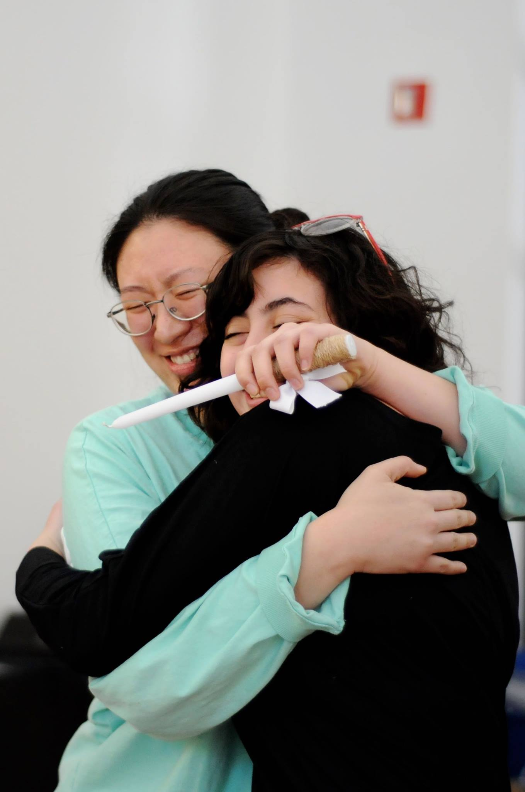

|

|
Alpha Omicron Pi encourages a spirit of fraternity and love among its members.
We stand at all times for character, dignity, scholarship and college loyalty.
One of the fraternity's founding principles encourages us to be of service to others and to bring into the world around us a spirit of love - not for self-glory, but as an opportunity to give something back to our community.
While learning and serving, we are sharing these moments with the best of friends, our AOII sisters!
|